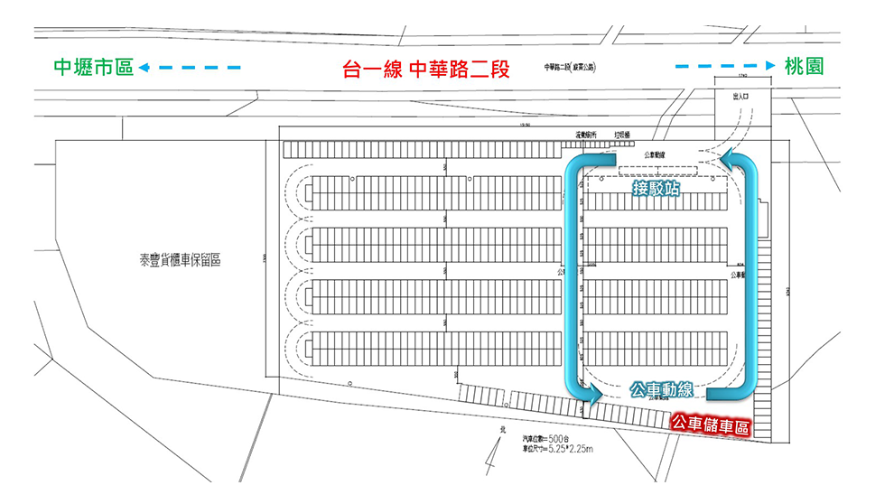
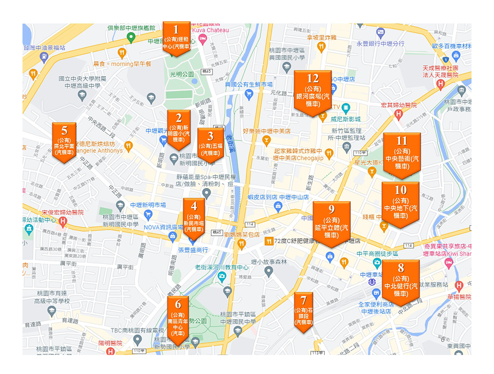

光之桃花源・選單
光之桃花源・選單


南下：
國道1號內壢交流道下往中壢方向 → 左轉台1線 → 右轉泰豐輪胎停車場 → 轉搭紅線接駁車
北上：
國道1號中壢交流道下往中壢方向 → 左轉台1線 → 右轉七和路 → 停放六和停車場 → 轉搭綠線接駁車
66快速道路：
平鎮二交流道往中壢方向接市道113線 → 右轉市道112線 → 左轉市道114線 → 右轉台1線 → 右轉泰豐輪胎停車場 → 轉搭紅線接駁車
機車停車場：
中壢國中：約150席 新勢國小：約600席 新明地下公有收費停車場：250席
開放人行道停放機車：
環北路雙側人行道：環北路92號至環西路二段300巷 康樂路單側人行道：中榮路至延平路
燈區周邊停車資訊：
活動停車場-泰豐停車場：  其他停車場資訊： 